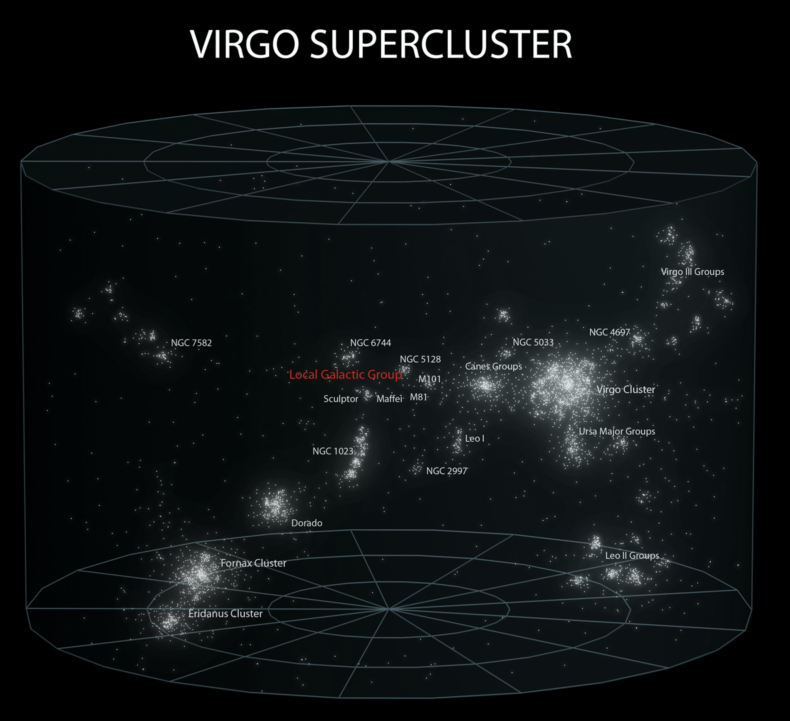

This is the entire observable universe. Our solar system is too small to be seen

Galactic Superclusters are the largest Gravitationally bound objects in the universe

The Virgo Supercluster contains our galaxy, along with 47,000 others
The Local Group contains the Milky Way (us) and the Andromeda Galaxy
Our galaxy. The Sol system, our home, is one of at least 100 billion stars in the Milky Way

Our neighborhood, the nearest star, Proxima Centauri at 4.25 light years away. If we were to try and fly there in a commercial jet it would take approximately 5000 years